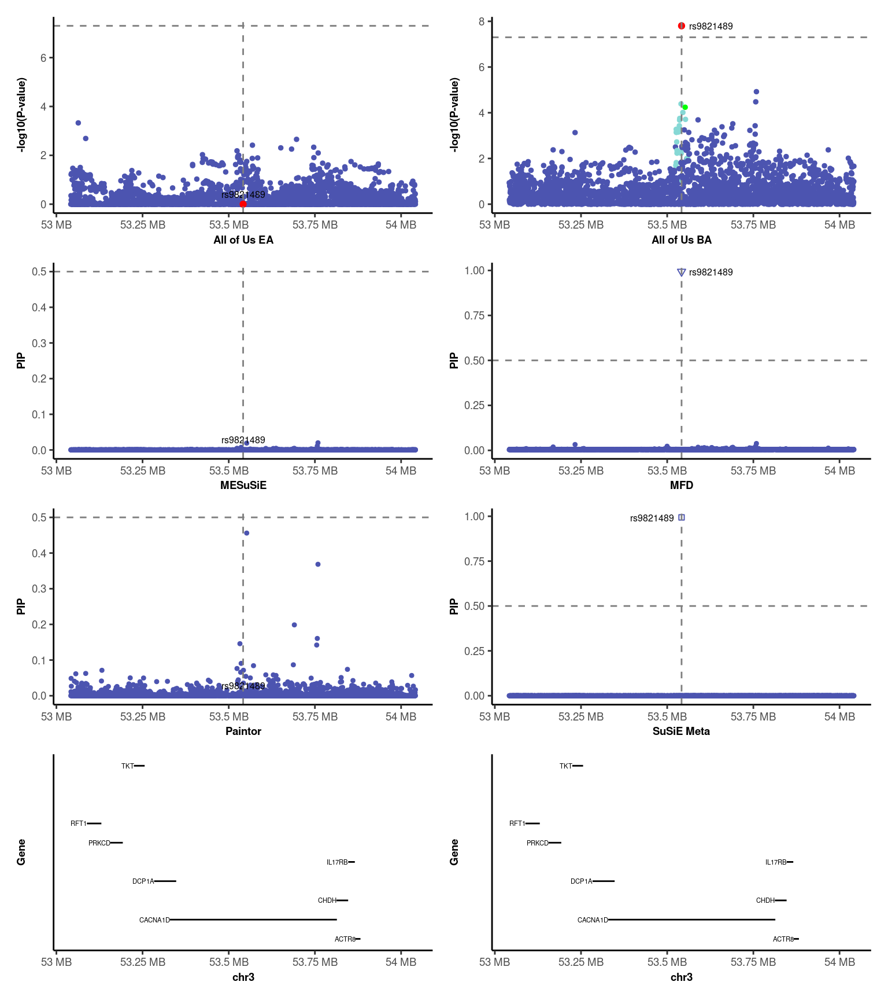
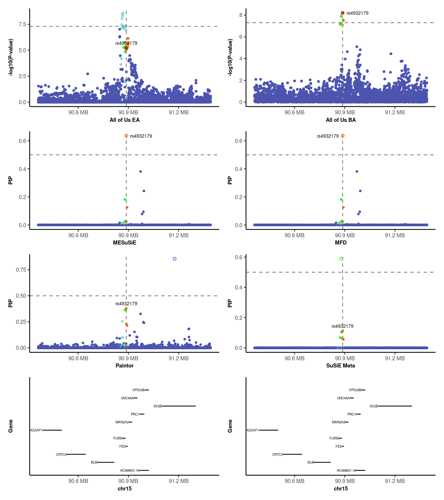

Last updated: 2026-08-25
Checks: 7 0
Knit directory: repo/
This reproducible R Markdown analysis was created with workflowr (version 1.7.2). The Checks tab describes the reproducibility checks that were applied when the results were created. The Past versions tab lists the development history.
Great! Since the R Markdown file has been committed to the Git repository, you know the exact version of the code that produced these results.
Great job! The global environment was empty. Objects defined in the global environment can affect the analysis in your R Markdown file in unknown ways. For reproduciblity it’s best to always run the code in an empty environment.
The command set.seed(20260210) was run prior to running
the code in the R Markdown file. Setting a seed ensures that any results
that rely on randomness, e.g. subsampling or permutations, are
reproducible.
Great job! Recording the operating system, R version, and package versions is critical for reproducibility.
Nice! There were no cached chunks for this analysis, so you can be confident that you successfully produced the results during this run.
Great job! Using relative paths to the files within your workflowr project makes it easier to run your code on other machines.
Great! You are using Git for version control. Tracking code development and connecting the code version to the results is critical for reproducibility.
The results in this page were generated with repository version 17ec372. See the Past versions tab to see a history of the changes made to the R Markdown and HTML files.
Note that you need to be careful to ensure that all relevant files for
the analysis have been committed to Git prior to generating the results
(you can use wflow_publish or
wflow_git_commit). workflowr only checks the R Markdown
file, but you know if there are other scripts or data files that it
depends on. Below is the status of the Git repository when the results
were generated:
working directory clean
Note that any generated files, e.g. HTML, png, CSS, etc., are not included in this status report because it is ok for generated content to have uncommitted changes.
These are the previous versions of the repository in which changes were
made to the R Markdown (analysis/AOU_example.Rmd) and HTML
(docs/AOU_example.html) files. If you’ve configured a
remote Git repository (see ?wflow_git_remote), click on the
hyperlinks in the table below to view the files as they were in that
past version.
| File | Version | Author | Date | Message |
|---|---|---|---|---|
| Rmd | 17ec372 | Guangxin Chen | 2026-08-25 | MFD website source |
| html | 17ec372 | Guangxin Chen | 2026-08-25 | MFD website source |
In this section, we demonstrate the performance of MFD using real-world loci associated with Diastolic Blood Pressure (DBP) from the All of Us dataset. These cases demonstrate that when ancestry-specific variants are present (CACNA1D Example), MFD’s explicit modeling of ancestry-specific variants improves the recovery of causal variants segregating in only a subset of ancestries, whereas joint modeling approaches focused on cross-ancestry signals have reduced power in this setting. Conversely, when the primary signal is a cross-ancestry signal (FES Example), MFD leverages diverse LD structures to enhance fine-mapping resolution and more accurately prioritize putative causal variants.
library(data.table)
library(patchwork)
source(here::here("code/plot_utils.R"))
res_dir <- "/scratch/negishi/chen4422/hapnest/multi-ans-sum-stats/Lipids_all_of_us_v8/formatted/test_MF_pipleline/summary_res/"
Gene_List <- fread("/scratch/negishi/chen4422/hapnest/multi-ans-sum-stats/Lipids_all_of_us_v8/formatted/format_summary_stats/Annotation/Gencode_genelist/Gencode_GRCh38_Genes_UniqueList2025.txt", header = TRUE)Locus 11 (lead variant rs9821489) highlights a critical advantage of MFD: the ability to incorporate ancestry-specific variants. The causal signal here is specific to the African Ancestry (AA) population. Joint modeling methods like MESuSiE often miss such signals because they require a common SNP set across all ancestries, filtering out variants unique to one group. MFD’s decision framework selects the SuSiE post-hoc approach, preserving these ancestry-specific signals.
trait <- "DBP"
LD_BLOCK <- 11
lead_SNP <- "rs9821489"
load(paste0(res_dir, "res_all_mf.RData"))
res_all <- res_all %>% filter(PHENONAME == trait)
wrk_dir <- paste0("/scratch/negishi/chen4422/hapnest/multi-ans-sum-stats/Lipids_all_of_us_v8/formatted/test_MF_pipleline/results_", trait, "/")
data_dir <- paste0(wrk_dir, "summary_data/")
EU_cov <- as.matrix(fread(paste0(data_dir, "eur_loci_", LD_BLOCK, ".ld")))
BB_cov <- as.matrix(fread(paste0(data_dir, "afr_loci_", LD_BLOCK, ".ld")))
candidate_region <- res_all %>%
filter(Region == LD_BLOCK) %>%
mutate(
r2_EUR = get_ld_vec(EU_cov, lead_SNP)[as.character(SNP)],
r2_AFR = get_ld_vec(BB_cov, lead_SNP)[as.character(SNP)],
r2_EUR = ifelse(is.na(r2_EUR), 0, r2_EUR),
r2_AFR = ifelse(is.na(r2_AFR), 0, r2_AFR),
Z_eur = coalesce(Z_eur, 0),
Z_afr = coalesce(Z_afr, 0),
POS = as.numeric(POS)
) %>%
assign_cats()
# GWAS panels
EUR_GWAS <- candidate_region %>%
mutate(r2 = r2_EUR, PIP = -log10(2*pnorm(-abs(Z_eur))), Lead_SNP = as.integer(SNP == lead_SNP)) %>%
select(SNP, POS, r2, PIP, Lead_SNP)
AFR_GWAS <- candidate_region %>%
mutate(r2 = r2_AFR, PIP = -log10(2*pnorm(-abs(Z_afr))), Lead_SNP = as.integer(SNP == lead_SNP)) %>%
select(SNP, POS, r2, PIP, Lead_SNP)
p_EUR <- gwas_plot_fun(EUR_GWAS, "All of Us EA", "-log10(P-value)", -log10(5e-8)) + drop_guides + theme(legend.position = "none")
p_AFR <- gwas_plot_fun(AFR_GWAS, "All of Us BA", "-log10(P-value)", -log10(5e-8)) + drop_guides + theme(legend.position = "none")
# Fine-mapping panels
p_MESuSiE <- finemap_plot_fun(make_plot_data(candidate_region, "r2_EUR", "MESuSiE_PIP_Either", "MESuSiE_cat", lead_SNP), "MESuSiE", "PIP", 0.5) + drop_guides + theme(legend.position = "none")
p_Paintor <- finemap_plot_fun(make_plot_data(candidate_region, "r2_EUR", "Paintor_PIP_Either", "Paintor_cat", lead_SNP), "Paintor", "PIP", 0.5) + drop_guides + theme(legend.position = "none")
p_MFD <- finemap_plot_fun(make_plot_data(candidate_region, "r2_EUR", "PIP_Either", "MFD_cat", lead_SNP), "MFD", "PIP", 0.5) + drop_guides + theme(legend.position = "none")
p_SuSiE_meta <- finemap_plot_fun(make_plot_data(candidate_region, "r2_EUR", "SuSiE_merged_PIP_Either","SuSiE_merged_cat",lead_SNP), "SuSiE Meta", "PIP", 0.5) + drop_guides + theme(legend.position = "none")
# Gene track
plot.range <- range(candidate_region$POS)
gene_sub <- Gene_List %>%
filter(Chrom == paste0("chr", unique(candidate_region$CHR)),
Start < max(candidate_region$POS), End > min(candidate_region$POS),
Coding == "proteincoding", !is.na(cdsLength), GeneLength > 10000)
p_gene <- gene_range_plot_fun(gene_sub, plot.range)
# Combined figure
(p_EUR / p_MESuSiE / p_Paintor / p_gene + plot_layout(heights = c(1,1,1,1)) |
p_AFR / p_MFD / p_SuSiE_meta / p_gene + plot_layout(heights = c(1,1,1,1))) +
plot_layout(guides = "collect") & theme(legend.position = "bottom")
| Version | Author | Date |
|---|---|---|
| 17ec372 | Guangxin Chen | 2026-08-25 |
susie_rss to the inverse-variance weighted meta-analysis
(\(L=1\)) without LD.Key Takeaway: MFD identifies a lead signal in the AA cohort involving a variant that is polymorphic only in AA and monomorphic in EA. By retaining these population-specific variants, MFD provides a more comprehensive map of the genetic architecture at CACNA1D.
Locus 31 (lead variant rs4932179) illustrates how joint multi-ancestry modeling can improve fine-mapping resolution. MFD determines that no significant ancestry-specific variants are present and employs joint modeling (MESuSiE), successfully concentrating PIP onto cross-ancestry causal variants with higher confidence than meta-analysis-based approaches.
LD_BLOCK <- 31
lead_SNP <- "rs4932179"
EU_cov <- as.matrix(fread(paste0(data_dir, "eur_loci_", LD_BLOCK, ".ld")))
BB_cov <- as.matrix(fread(paste0(data_dir, "afr_loci_", LD_BLOCK, ".ld")))
candidate_region <- res_all %>%
filter(Region == LD_BLOCK) %>%
mutate(
r2_EUR = get_ld_vec(EU_cov, lead_SNP)[as.character(SNP)],
r2_AFR = get_ld_vec(BB_cov, lead_SNP)[as.character(SNP)],
r2_EUR = ifelse(is.na(r2_EUR), 0, r2_EUR),
r2_AFR = ifelse(is.na(r2_AFR), 0, r2_AFR),
Z_eur = coalesce(Z_eur, 0),
Z_afr = coalesce(Z_afr, 0),
POS = as.numeric(POS)
) %>%
assign_cats()
# GWAS panels
EUR_GWAS <- candidate_region %>%
mutate(r2 = r2_EUR, PIP = -log10(2*pnorm(-abs(Z_eur))), Lead_SNP = as.integer(SNP == lead_SNP)) %>%
select(SNP, POS, r2, PIP, Lead_SNP)
AFR_GWAS <- candidate_region %>%
mutate(r2 = r2_AFR, PIP = -log10(2*pnorm(-abs(Z_afr))), Lead_SNP = as.integer(SNP == lead_SNP)) %>%
select(SNP, POS, r2, PIP, Lead_SNP)
p_EUR <- gwas_plot_fun(EUR_GWAS, "All of Us EA", "-log10(P-value)", -log10(5e-8)) + drop_guides + theme(legend.position = "none")
p_AFR <- gwas_plot_fun(AFR_GWAS, "All of Us BA", "-log10(P-value)", -log10(5e-8)) + drop_guides + theme(legend.position = "none")
# Fine-mapping panels with rs10744783 shown in the combined-signal category
mesusie_data <- make_plot_data(candidate_region, "r2_EUR", "MESuSiE_PIP_Either", "MESuSiE_cat", lead_SNP)
mesusie_data[mesusie_data$SNP == "rs10744783", "cat"] <- "Paintor"
p_MESuSiE <- finemap_plot_fun(mesusie_data, "MESuSiE", "PIP", 0.5) + drop_guides + theme(legend.position = "none")
p_Paintor <- finemap_plot_fun(make_plot_data(candidate_region, "r2_EUR", "Paintor_PIP_Either", "Paintor_cat", lead_SNP), "Paintor", "PIP", 0.5) + drop_guides + theme(legend.position = "none")
p_MFD <- finemap_plot_fun(make_plot_data(candidate_region, "r2_EUR", "PIP_Either", "MFD_cat", lead_SNP), "MFD", "PIP", 0.5) + drop_guides + theme(legend.position = "none")
p_SuSiE_meta <- finemap_plot_fun(make_plot_data(candidate_region, "r2_EUR", "SuSiE_merged_PIP_Either","SuSiE_merged_cat", lead_SNP), "SuSiE Meta", "PIP", 0.5) + drop_guides + theme(legend.position = "none")
# Gene track
plot.range <- range(candidate_region$POS)
gene_sub <- Gene_List %>%
filter(Chrom == paste0("chr", unique(candidate_region$CHR)),
Start < max(candidate_region$POS), End > min(candidate_region$POS),
Coding == "proteincoding", !is.na(cdsLength), GeneLength > 10000)
p_gene <- gene_range_plot_fun(gene_sub, plot.range)
# Combined figure
(p_EUR / p_MESuSiE / p_Paintor / p_gene + plot_layout(heights = c(1,1,1,1)) |
p_AFR / p_MFD / p_SuSiE_meta / p_gene + plot_layout(heights = c(1,1,1,1))) +
plot_layout(guides = "collect") & theme(legend.position = "bottom")
| Version | Author | Date |
|---|---|---|
| 17ec372 | Guangxin Chen | 2026-08-25 |
susie_rss to the inverse-variance weighted meta-analysis
(\(L=1\)) without LD.Key Takeaway: At the FES locus, MFD achieves higher PIP confidence (> 0.5) for cross-ancestry variants by borrowing strength across populations, outperforming meta-analysis-based SuSiE in fine-mapping resolution.
sessionInfo()R version 4.2.2 (2022-10-31)
Platform: x86_64-pc-linux-gnu (64-bit)
Running under: Rocky Linux 8.10 (Green Obsidian)
Matrix products: default
BLAS/LAPACK: /apps/spack/negishi/apps/openblas/0.3.21-gcc-12.2.0-lzvicim/lib/libopenblas_zenp-r0.3.21.so
locale:
[1] LC_CTYPE=C.UTF-8 LC_NUMERIC=C LC_TIME=C.UTF-8
[4] LC_COLLATE=C.UTF-8 LC_MONETARY=C.UTF-8 LC_MESSAGES=C.UTF-8
[7] LC_PAPER=C.UTF-8 LC_NAME=C LC_ADDRESS=C
[10] LC_TELEPHONE=C LC_MEASUREMENT=C.UTF-8 LC_IDENTIFICATION=C
attached base packages:
[1] stats graphics grDevices utils datasets methods base
other attached packages:
[1] ggrepel_0.9.6 dplyr_1.1.4 ggplot2_3.5.2 patchwork_1.3.0
[5] data.table_1.16.2 workflowr_1.7.2
loaded via a namespace (and not attached):
[1] tidyselect_1.2.1 xfun_0.48 bslib_0.8.0 colorspace_2.1-1
[5] vctrs_0.6.5 generics_0.1.3 htmltools_0.5.8.1 yaml_2.3.10
[9] utf8_1.2.4 rlang_1.2.0 jquerylib_0.1.4 later_1.3.2
[13] pillar_1.9.0 glue_1.8.0 withr_3.0.2 lifecycle_1.0.5
[17] stringr_1.5.1 munsell_0.5.1 gtable_0.3.6 evaluate_1.0.5
[21] labeling_0.4.3 knitr_1.48 callr_3.7.6 fastmap_1.2.0
[25] httpuv_1.6.6 ps_1.9.2 fansi_1.0.6 highr_0.11
[29] Rcpp_1.1.1 promises_1.3.0 scales_1.3.0 cachem_1.1.0
[33] jsonlite_2.0.0 farver_2.1.2 fs_2.0.1 digest_0.6.37
[37] stringi_1.8.4 processx_3.8.7 getPass_0.2-4 rprojroot_2.1.1
[41] grid_4.2.2 here_1.0.1 cli_3.6.3 tools_4.2.2
[45] magrittr_2.0.3 sass_0.4.9 tibble_3.2.1 whisker_0.4
[49] pkgconfig_2.0.3 rmarkdown_2.28 httr_1.4.7 rstudioapi_0.14
[53] R6_2.6.1 git2r_0.36.2 compiler_4.2.2